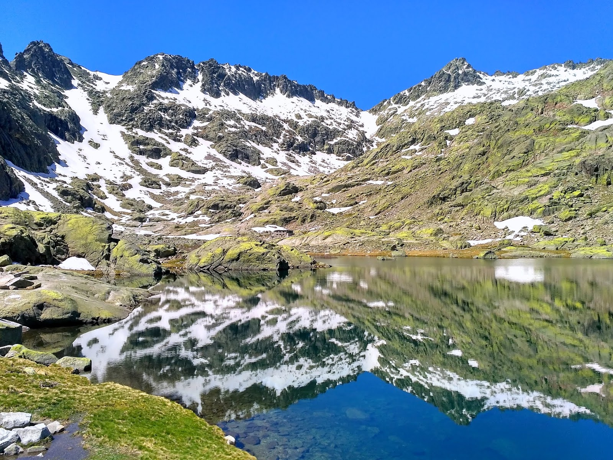

<!DOCTYPE html>
<html lang="en" dir="ltr">
<head>
  <meta charset="utf-8">
  <title>Ruta de la Sierra de Gredos</title>
</head>
<body>

</body>
</html>
<!DOCTYPE html>
<html lang="en" dir="ltr">
<head>
  <meta charset="utf-8">
  <title>Ruta de la Sierra de Gredos</title>
  <link rel="stylesheet" href="https://stackpath.bootstrapcdn.com/bootstrap/4.2.1/css/bootstrap.min.css"
  integrity="sha384-GJzZqFGwb1QTTN6wy59ffF1BuGJpLSa9DkKMp0DgiMDm4iYMj70gZWKYbI706tWS" crossorigin="anonymous">
  <link href="css/estilo.css" rel="stylesheet">
  <script src="https://code.jquery.com/jquery-3.3.1.slim.min.js"
  integrity="sha384-q8i/X+965DzO0rT7abK41JStQIAqVgRVzpbzo5smXKp4YfRvH+8abtTE1Pi6jizo" crossorigin="anonymous"></script>
  <script src="https://cdnjs.cloudflare.com/ajax/libs/popper.js/1.14.6/umd/popper.min.js"
  integrity="sha384-wHAiFfRlMFy6i5SRaxvfOCifBUQy1xHdJ/yoi7FRNXMRBu5WHdZYu1hA6ZOblgut" crossorigin="anonymous"></script>
  <script src="https://stackpath.bootstrapcdn.com/bootstrap/4.2.1/js/bootstrap.min.js"
  integrity="sha384-B0UglyR+jN6CkvvICOB2joaf5I4l3gm9GU6Hc1og6Ls7i6U/mkkaduKaBhlAXv9k" crossorigin="anonymous"></script>
</head>
<body>
  <div class="container ruta">


    <!-- Navbar -->
    <nav id="menu" class="navbar navbar-expand-lg navbar-light bg-light">
      <a class="navbar-brand" href="index.html">Montañeando</a>
      <button class="navbar-toggler" type="button" data-toggle="collapse" data-target="#navbarSupportedContent" aria-controls="navbarSupportedContent" aria-expanded="false" aria-label="Toggle navigation">
        <span class="navbar-toggler-icon"></span>
      </button>

      <div class="collapse navbar-collapse" id="navbarSupportedContent">
        <ul class="navbar-nav mr-auto">
          <li class="nav-item active">
            <a class="nav-link" href="index.html">Inicio<span class="sr-only">(current)</span></a>
          </li>
          <li class="nav-item">
            <a class="nav-link" href="detalle6.html">Quienes somos</a>
          </li>
          <li class="nav-item dropdown">
            <a class="nav-link dropdown-toggle" href="#" id="navbarDropdown" role="button" data-toggle="dropdown" aria-haspopup="true" aria-expanded="false"> Rutas
            </a>
            <div class="dropdown-menu" aria-labelledby="navbarDropdown">
              <a class="dropdown-item" href="detalle1.html">Ruta de los pantaneros</a>
              <div class="dropdown-divider"></div>
              <a class="dropdown-item" href="detalle2.html">Ruta de los Monasterios</a>
              <div class="dropdown-divider"></div>
              <a class="dropdown-item" href="detalle3.html">Ruta de la Sierra de Gredos</a>
              <div class="dropdown-divider"></div>
              <a class="dropdown-item" href="detalle4.html">Ruta de los Picos de Europa</a>
              <div class="dropdown-divider"></div>
            </div>
          </li>
          <li class="nav-item">
            <a class="nav-link" href="detalle5.html">Equipamiento deportivo</a>
          </li>
        </ul>

      </div>
    </nav>
    <!-- Fin de la navbar -->

    <h1>Ruta de la Sierra de Gredos</h1>
    <div class="row">
      <div class="col-sm-6">
        
      </div>
      <div class="col-sm-6">
        <br>
        <br>
        <br>
        <p>Descripción: La Sierra de Gredos, en el sur de Castilla y León,
          es un recorrido lleno de lagunas, riscos, cabras montesas y gargantas, tiene una distancia de 120 kilómetros.
          No es un recorrido muy complejo por lo tanto es ideal para toda la familia.
          A continuación os dejamos la ruta:</p>
        </div>
      </div>
      <br>
      <br>
      <div class="row">
        <div class="col-sm-3">
        </div>
        <div class="col-sm-5">
          <iframe src="https://www.google.com/maps/embed?pb=!1m18!1m12!1m3!1d115794.86403523835!2d-5.
          182773804596974!3d40.30109090586067!2m3!1f0!2f0!3f0!3m2!1i1024!2i768!4f13.
          1!3m3!1m2!1s0xd3f89be2d37452b%3A0x2f77e1e363a316d4!2sSierra+de+Gredos!5e0!3m2!1ses!2ses!4v1545996758115"
          width="500" height="350" frameborder="0" style="border:0" allowfullscreen></iframe>
        </div>
        <div class="col-sm-4">
        </div>
      </div>


    </body>
    </html>
